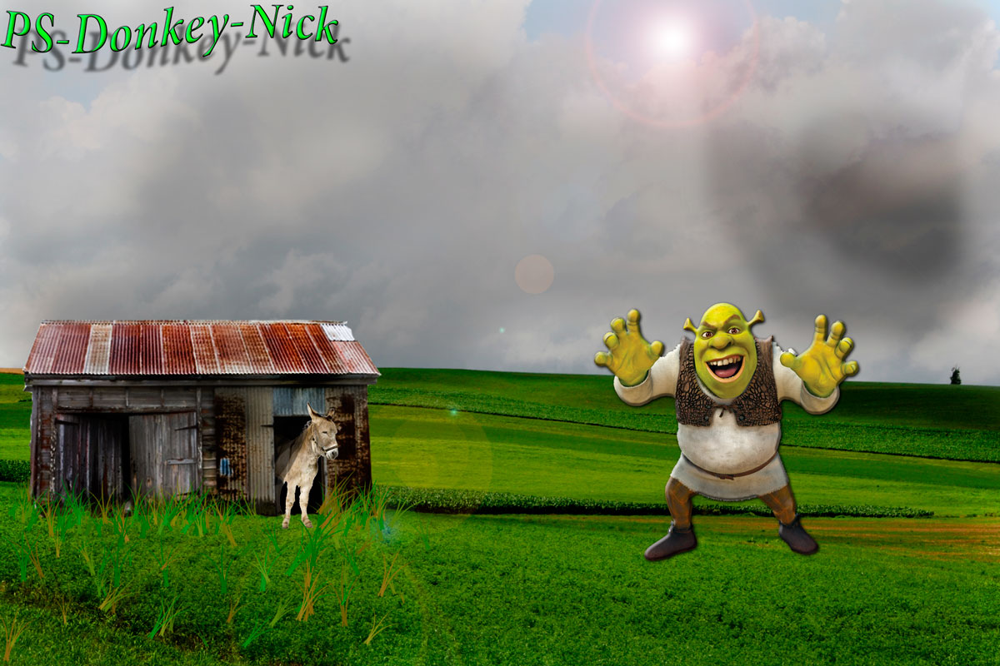

JPEGJPEG is short for Joint Photographic Experts Group, and is the most popular among the image formats used on the web. JPEG files are very 'lossy', meaning so much information is lost from the original image when you save it in JPEG file. This is because JPEG discards most of the information to keep the image file size small; which means some degree of quality is also lost. Almost every digital camera can shoot and save in the JPEG format. JPEG is very web friendly because the file is smaller, which means it takes up less room, and requires less time to transfer to a sites. Moreover it is less grainy then GIF, the old king of the internet roost. Since 1994, JPEG has been considered the standard. |
 |
Pros
Cons
|